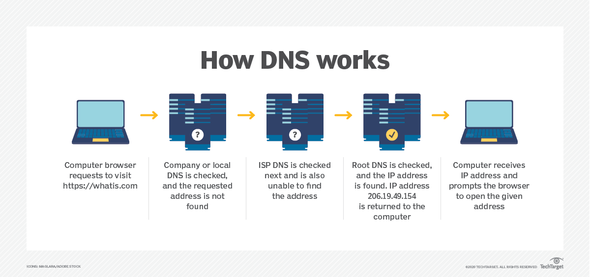

WHAT IS DNS?
The Domain Name System (DNS) is the phonebook of the Internet. Humans access information online through domain names,
like nytimes.com or espn.com. Web browsers interact through Internet Protocol (IP) addresses. DNS translates domain names
to IP addresses so browsers can load Internet resources.
Each device connected to the Internet has a unique IP address which other machines use to find the device. DNS servers
eliminate the need for humans to memorize IP addresses such as 192.168.1.1 (in IPv4), or more complex newer alphanumeric
IP addresses such as 2400:cb00:2048:1::c629:d7a2 (in IPv6).
HOW DNS WORKS?
DNS servers convert URLs and domain names into IP addresses that computers can understand and use. They translate
what a user types into a browser into something the machine can use to find a webpage. This process of translation and lookup is
called DNS resolution.
DNS resolution follows these steps:
- -The user enters a web address or domain name into a browser.
- -The browser sends a message, called a recursive DNS query, to the network to find out which IP or network address the domain corresponds to.
- -The query goes to a recursive DNS server, which is also called a recursive resolver, and is usually managed by the internet service provider (ISP).
If the recursive resolver has the address, it will return the address to the user, and the webpage will load.
- -If the recursive DNS server does not have an answer, it will query a series of other servers in the following order: DNS root name servers,
top-level domain (TLD) name servers and authoritative name servers.
- -The three server types work together and continue redirecting until they retrieve a DNS record that contains the queried IP address. It sends this information to the recursive DNS server, and the webpage the user is looking for loads. DNS root name servers and TLD servers primarily redirect queries and rarely provide the resolution themselves.
- -The recursive server stores, or caches, the A record for the domain name, which contains the IP address. The next time it receives a request for that domain name, it can respond directly to the user instead of querying other servers.
- -If the query reaches the authoritative server and it cannot find the information, it returns an error message.
